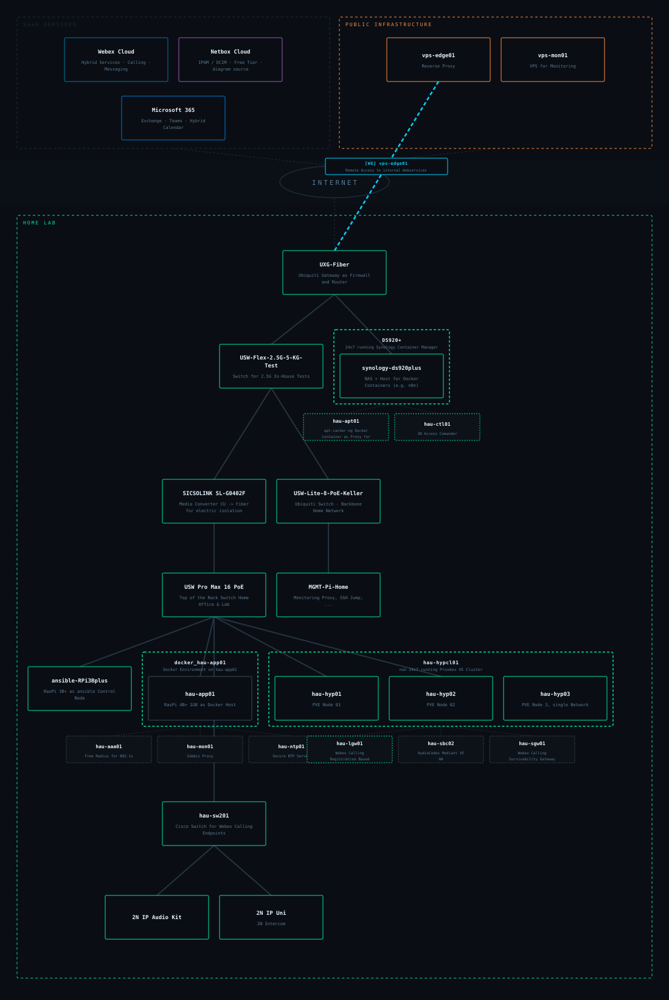

IPAM & DCIM as a SaaS. Source for auto-generated network diagrams. No plugins on the free tier.
Microsoft 365
Exchange Online, Teams and Entra ID. Used for Webex Hybrid Calendar and Directory Connector testing.
☁ Public Infrastructure
VPS · Monitoring
Nagios Core — active & passive monitoring of all lab components. Heartbeat checks via cron-job.org. Dedicated hosting provider.
VPS · nginx / Reverse Proxy
nginx reverse proxy & web server. Separate hosting provider. WireGuard tunnel endpoint to the home lab gateway.
🏠 Home Lab
Unifi Gateway + Switch
Ubiquiti Unifi network backbone. VLAN segmentation for lab, home network and management traffic. WireGuard VPN endpoint.
Proxmox Cluster
Virtualization platform for VMs and LXC containers. Cluster layout auto-rendered from Netbox.
Ansible Control Node · RasPi
Dedicated Raspberry Pi as Ansible control node. Configuration management, Ansible Vault for secrets, Docker stack deployments.
Synology NAS · Docker Stacks
n8n (workflow automation + Webex integration), phpIPAM and more. Deployed and managed via Ansible.
Cisco Switch + IP Phones
Managed switch in the lab segment. Cisco IP Phones for Webex Calling & SIP testing.
2N Lab · Intercom & Access Manager
2N IP Intercom and 2N Access Manager for door communication and access control. Integrated with Webex Cloud Calling.
🔒
WireGuard Tunnel
A permanent WireGuard VPN tunnel connects the VPS nginx and the
Unifi Gateway in the home lab.
This allows internal lab services to be exposed via the reverse proxy without
opening direct port forwards in the home network.
Tunnel endpoints are documented in Netbox (VPN → Tunnels)
and rendered in the diagram below.
Network Diagram

Auto-generated via Netbox Cloud Free API · tag-based filtering · Proxmox cluster hierarchy · GitHub Actions (weekly) ·
Last update: —